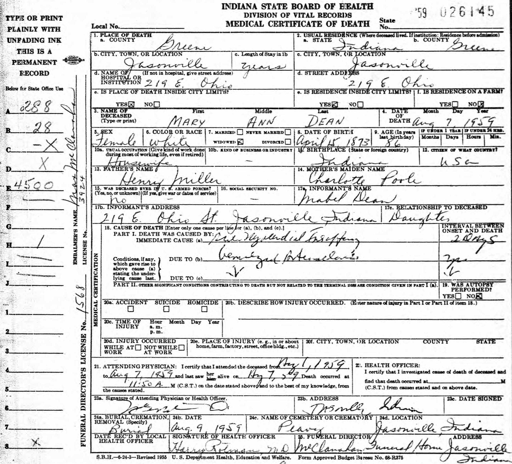

Mary Ann Dean (née Miller) 1873 - 1959
[ Home ] | [ Calendar ] | [ Surnames Index ] | [ Census Index ] | [ Family History ]The child of Henry Miller and Charlotte Pool, Mary Miller, the third cousin three-times-removed on the mother's side of Nigel Horne, was born in Lewis, Clay, Indiana, USA on Apr 15, 18731 and was married twice - to John Davis (on Aug 2, 1891 in Clay, Indiana, USA) Mckendrie Dean (on Nov 1, 1910 in Brazil, Indiana)2. She had 4 children: Roy J, Lewis H and Mabel Charlotte with John Monroe, and one surviving child.
During her life, she was living in Clay on Jun 1, 18801 and on Jun 1, 19004 (the same place as her father had been living on Jun 1, 1880); at her birthplace on Apr 15, 19105; and in Clay on Jan 1, 19203 (the same place as her mother had been living on Jun 1, 1860).
She died on Aug 7, 1959 in Jasonville, Greene, Indiana.
Parents
- Henry William Charles was born on Jul 5, 1843
- Charlotte Maria was born on Feb 7, 1847
Children
- Roy J was born in 1894
- Lewis H was born in 1896
- Mabel Charlotte was born on May 30, 1906
Citations
- Us Census 1880 - Findmypast (was age 7 and the daughter of the head of the household)
- United States Marriages - Findmypast
- US Census 1920 - Findmypast (was age 45 and the wife of the head of the household)
- US Census 1900 - Findmypast (was the wife of the head of the household)
- US Census 1910 - Findmypast (was age 38 and the head of the household)
Media
Mary Ann Miller

Mary Ann Miller - Death Certificate

US Census 1880 - USC/1880/1000118841936
United States Marriages - R_1128532183/2
United States Marriages - FS/MAR/36610120/2
US Census 1920 - USC/1920/004964848/00159/030
US Census 1900 - USC/1900/004118585/00884/098
Family Tree

Generated by ged2site. Last updated on Jun 11, 2024